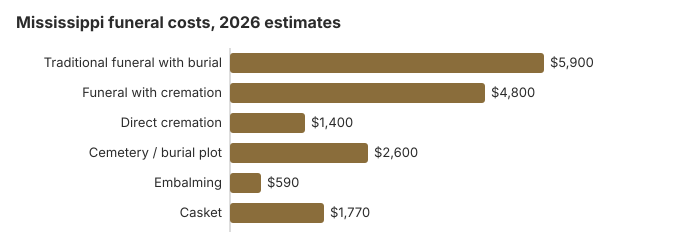

Funeral Costs in Mississippi: What Families Pay in 2026
Mississippi funeral prices stretch from roughly $1,400, for direct cremation, to $7,670 for a full service with burial. Each home sets its own prices, so the first one you call is rarely the cheapest.
Mississippi Funeral Prices, Charge by Charge
Mississippi's State Board of Funeral Service licenses each home; the prices are left to the home.
| Item | Estimate | Low to high |
|---|---|---|
| Traditional funeral with burial | $5,900 | $4,425 – $7,670 |
| Funeral with cremation | $4,800 | $3,840 – $6,240 |
| Direct cremation | $1,400 | $980 – $1,960 |
| Cemetery / burial plot | $2,600 | $1,300 – $5,200 |
| Embalming | $590 | $500 – $1,500 |
| Casket | $1,770 | $590 – $4,720 |
About the numbers: Mississippi funeral homes were not polled for this table. Every figure is our modelled estimate, useful for setting a budget but not a quote and not advice; how the model works and our disclaimer.
State sources: Miss. Code Ann. § 43-31-29.

Mississippi Burial and Cremation Pages
For more detail on each choice:
Cremation Costs in Mississippi
Cremation is still a minority choice in Mississippi, about 28% of deaths. The cremation page prices it from about $1,400 direct to $4,800 with a service and explains urns and scattering.
Burial Costs in Mississippi
Plot (about $2,600), casket, vault, marker and opening: a complete Mississippi burial runs $13,110 to $17,610.
Why Mississippi Prices Vary
Mississippi prices sit well under the $8,300 US median, as in much of the South. Homes around Jackson often charge 10-30% more than those in small towns and the Delta.
Burial Still Leads in Mississippi
Cremation
- Direct cremation runs near $1,400, a quarter of the Mississippi funeral estimate
- Add a church or chapel service and it rises to about $4,800
- No grave to buy or open
- The family can set the memorial date later
- Chosen by only 28% of Mississippi families
Traditional Burial
- Funeral home charges near $5,900
- A Mississippi cemetery plot near $2,600
- Most cemeteries ask for an outer burial container
- A place to visit, often in a church or family cemetery
- Metal casket, US median $2,500 (NFDA 2023 General Price List Study); Mississippi sellers vary
The FTC Rule in Mississippi
Breaches by a Mississippi home go to ftc.gov, and the Funeral Consumers Alliance offers free guidance.
Mississippi City Prices
City estimates for Mississippi:
Mississippi Charges Worth Questioning
These charges often show up after the first quote:
- Embalming billed as mandatory; Mississippi only requires it, or refrigeration, when burial or cremation waits past 48 hours.
The Cheapest Mississippi Arrangements
| Arrangement | Rough cost | Includes |
|---|---|---|
| Direct cremation | $1,400 | Just the cremation; a permit is needed, with no set wait (15 Miss. Admin. Code Pt. 5, R. 4.7.2). |
| Direct burial | $2,950 | Quick burial with no embalming or visitation; the cemetery bills plot and opening itself. |
| Green burial | $3,245 | No embalming or vault, if the cemetery agrees. |
| Cremation + memorial | $4,800 | Cremation, then a service with the urn present |
| Traditional funeral | $5,900 | Embalming, viewing, the service and a graveside committal |
Mississippi Funeral Assistance
- County boards of supervisors must have written rules for burying the poor and may pay all or part of the cost (Miss. Code Ann. § 43-31-29).
- Social Security pays a one-time $255 only to a surviving spouse or eligible child who applies (1-800-772-1213) before the second anniversary of the death; the funeral home's report of the death is not a claim.
- A Mississippi veteran's funeral may qualify for a VA allowance. When a death from October 1, 2026 onward was not service-connected, whoever paid the bill files VA Form 21P-530EZ and can recover up to $1,032 toward burial and another $1,032 toward a plot (see the veteran burial benefits guide).
- Medicaid, church and charity options are collected in the assistance guide, and paying with no money lists the lowest-cost routes.
Educational Resources
- Funeral Consumers AllianceIndependent nonprofit consumer advocacy for funeral rights
- FTC Funeral RuleThe federal rule protecting funeral consumers
- Funeral Insurance GuideCompare final expense and burial insurance options
- Best Burial Insurance CompaniesSide-by-side comparison of top burial insurance providers
- Payment Assistance GuideGovernment programs and financial help for funeral costs
- Insurance Plan ComparisonCompare coverage, premiums, and payout speed across providers
Compare Funeral Costs
- Average Funeral Cost in 2026National cost breakdown with real prices
- Cremation vs. Burial Cost ComparisonSide-by-side price comparison to help you decide
- Funeral Cost BreakdownEvery line item explained: know what you're paying for
- Cheapest Funeral OptionsLower-cost alternatives, with typical price ranges
- Direct Cremation: Most Affordable OptionNFDA 2023 median $2,645 with a family-supplied container (latest available)
- How to Compare Funeral PricesStep-by-step guide to getting the best price
Mississippi's Funeral Market
Chain ownership has raised prices in some Mississippi towns, while family-run homes still dominate in others, so it pays to ask who owns the home.
Arranging a Mississippi Funeral
In order:
- Burial or cremation: cremation in Mississippi or burial in Mississippi.
What Mississippi death certificates cost
Mississippi Vital Records, part of the State Department of Health, charges $17 for a death certificate's first certified copy and $6 for each additional copy of the same record ordered at the same time. The $17 is kept even if no record turns up; only the money for extra copies is refunded (MSDH, death certificate instructions; checked October 29, 2026).
- Where to send: Mississippi Vital Records, P.O. Box 1700, Jackson, MS 39215-1700. The office's line is 601-206-8200, and its files go back to November 1912.
- Timing: paid death certificate requests made in person are mailed out within 7 to 10 business days rather than handed over the same day.
- Veterans: up to five certified copies are free for an honorably discharged veteran who died in Mississippi when a recognized Veterans Service Officer applies in writing.
- Mistakes: if the certificate is wrong and the death was less than a year ago, tell the funeral director who filed it; after a year a court order may be needed.
Ordering four at once costs $35; four separate orders would cost $68. Banks, insurers, the DMV for a vehicle title and any pension plan usually each want their own certified copy, so count them before you order.
Who licenses Mississippi funeral homes, and who helps pay
The Mississippi State Board of Funeral Service (601-932-1973) licenses funeral directors and funeral homes. Call it to check a license or to complain if a home refuses to hand over its price list.
Families in Mississippi may handle much of a funeral themselves; the state is not one of the nine on the Funeral Consumers Alliance list. Cremation may go ahead once a permit is issued, since the state imposes no waiting period (15 Miss. Admin. Code Pt. 5, R. 4.7.2).
When there is no money: the county board
Each county board of supervisors must bury paupers and strangers who die in the county and must keep a written indigent-burial policy that sets out who qualifies; the board may pay all of the cost or only part (Miss. Code Ann. § 43-31-29). Ask the chancery clerk's office for the policy before a funeral home is hired. Against our $5,900 Mississippi estimate, Social Security's $255 lump sum for a surviving spouse or child covers very little.
Veterans
Mississippi has three national cemeteries, Biloxi (228-388-6668), Corinth (901-386-8311) and Natchez (601-445-4981). Reservations for those three are made by the funeral director with the VA's National Cemetery Scheduling Office, 800-535-1117. The state's own veterans memorial cemeteries are at Kilmichael (662-262-4232) and Newton (601-683-2959) and take calls directly.
Prepaid funerals and cemetery trusts
The Secretary of State's Regulation and Enforcement Division, not the funeral board, oversees preneed sales under the Preneed Cemetery and Funeral Registration Act (Miss. Code Ann. § 75-63-67). Any home or cemetery that sells before death must register, use a contract form the Division has approved, and generally place at least 85% of what you pay in an independent trust. Every contract must print the complaint line, 601-359-9055.
The same division registers perpetual care cemeteries, which must keep an irrevocable care trust and renew each March 31. Church, fraternal, municipal, family and community cemeteries are exempt, so a plot in one of those carries no state-backed care fund; ask who will mow and maintain the grave in fifty years.
Mississippi checklist
- Collect at least two written price lists before choosing a funeral home.
- Skip embalming and the viewing by holding a memorial instead.
- If money is short, get the county's indigent-burial policy first.
- For a veteran, ask about Biloxi, Corinth, Natchez or the Kilmichael and Newton state cemeteries before pricing a private plot.
- The funeral board's number is 601-932-1973.
Frequently Asked Questions
What does a Mississippi funeral cost in 2026?
Expect about $5,900 for a traditional Mississippi funeral, 29% under the $8,300 US median, on our 2026 estimates. Cremation with a service runs near $4,800 and direct cremation from $1,400, while burial brings roughly $2,600 more for the cemetery.
How much does cremation save in Mississippi?
Often more than $4,500: about $1,400 against $5,900 before a plot. Even so, only 28% of Mississippians choose cremation, far below NFDA's 63.4% national projection for 2025.
What protections do Mississippi families have?
Federal law (16 CFR 453) guarantees you an itemized price list, prices by phone, and the right to bring a casket or urn bought elsewhere without a handling fee. Mississippi is not on the Funeral Consumers Alliance list of states that make families use a funeral director. The Mississippi State Board of Funeral Service, 601-932-1973, confirms licenses and takes complaints.
What cuts the cost most in Mississippi?
Line up three General Price Lists, strike any package items you don't want, and if cost settles it, direct cremation near $1,400 is the cheapest Mississippi choice.
Is embalming legally required in Mississippi?
No. The Health Department's rules say Mississippi does not require embalming, caskets or vaults, with one exception (15 Miss. Admin. Code Pt. 5, R. 4.6.3): a body must be buried or cremated within 48 hours of death unless it is embalmed or refrigerated, and a body transported that cannot reach its destination within 24 hours must be embalmed or refrigerated.
Embalming costs about $590 in Mississippi on this page's estimate, below NFDA's 2023 national median of $845.
Is Mississippi cheap for funerals?
Yes. Our $5,900 traditional estimate is 29% under the $8,300 national median, among the lower figures in the South.
Which funeral option costs the least in Mississippi?
In Mississippi it is direct cremation, from roughly $1,400. Direct burial is the next step up at about $2,950, which is $2,950 below a traditional Mississippi funeral.
Which Mississippi funeral homes charge least?
Put the direct cremation line, about $1,400, side by side on three price lists; if your family won't cremate, compare immediate burial instead.
The University of Mississippi Medical Center's Anatomical Gift Program ordinarily costs the family nothing beyond death certificate copies: for an accepted donor who dies in Mississippi it covers removal from anywhere in the state, preparation, cremation and return of the ashes. If UMMC declines the donation at the time of death, the family has to arrange and pay for a funeral, so keep a backup price list.